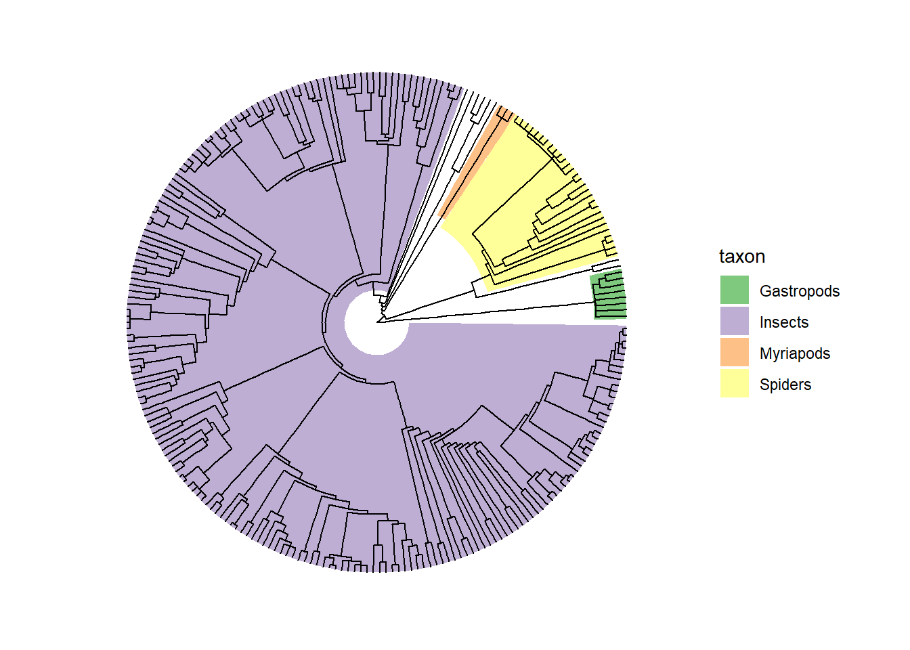

library(tidyverse) # CRAN v2.0.0
library(ape) # CRAN v5.7-1
library(rotl) # CRAN v3.1.0
library(ggtree) # Bioconductor v3.8.2
library(here) # CRAN v1.0.1Making a phylogenetic tree using #Invertefest observations
#InverteFest is a periodic online event where we invite you to celebrate the overlooked invertebrate fauna around you and share the joys of discovery online.
The hashtag was conceived when Franz Anthony and Maureen Bug went looking for bugs and slugs in Bali. Kelly Brenner, stuck in Seattle, wondered if we could invite our online friends to look for bugs and slugs together in spirit, even though we’re physically far apart. Besides, what may be an everyday creature to you is often exciting to someone who lives half the world away!
(from the #Invertefest August 2023 page on iNaturalist)
During this summer’s (2023) #Invertefest, I randomly decided it would be neat to try and make a phylogenetic tree from all the iNat observations.
Loading iNat observations
(for now?) we rely on data predownloaded manually through the website:
invertefest_summer23 <- read_csv(here("raw_data","observations-354332.csv"))Ideally we would use the rinat package instead, but it has some issues including saying the project has 1000s of obs when it only has a few 100s:
library(rinat) # CRAN v0.1.9
rinat_descr <- get_inat_obs_project("invertefest-august-2023", type = "info", raw = FALSE)
rinat_descr[c("title","slug","taxa_count")] # this is the right project, but way too many obs$title
[1] "#InverteFest August 2023"
$slug
[1] "invertefest-august-2023"
$taxa_count
[1] 42711We could also try to directly query the API via httr::GET(), but then the resulting list would need lots of cleaning.
Generating tree data
Now that we have our data, we are going to use the rotl package to:
- standardize taxon names
- get the subtree of the Tree of Life from these taxon names
taxa <- unique(invertefest_summer23$scientific_name)
resolved_names <- tnrs_match_names(taxa, context_name = "Animals")
filtered_names <- resolved_names |>
filter(!is.na(ott_id) & flags!="incertae_sedis_inherited")(not all obs are successfully matched to a taxon name on the ‘synthetic tree’ from Open Tree of Life, so we lose a few in the process)
tol_induced_subtree(
ott_ids = unique(filtered_names$ott_id),
label_format="name", file=here("tree_data","tree.newick"))
my_tree <- ape::read.tree(here("tree_data","tree.newick"))We save the tree in Newick format to file, and then reimport it immediately. We actually don’t need to do that in most cases, we could directly get the tree as a phylo object, by letting the file argument empty. But doing that tends to collapse a lot of internal nodes (which contains the clade names), and we’re going to use some of those to annotate the tree.
Plotting the tree
We use the ggtree package to plot and annotate the tree:
d1 <- data.frame(node=c(length(my_tree$tip.label)+which(my_tree$node.label=="Insecta"),
length(my_tree$tip.label)+which(my_tree$node.label=="Myriapoda"),
length(my_tree$tip.label)+which(my_tree$node.label=="Araneae"),
length(my_tree$tip.label)+which(my_tree$node.label=="Gastropoda")
),
taxon=c("Insects","Myriapods","Spiders","Gastropods"))(tips are counted as nodes for ggtree purposes, that’s why we add the number of tips to get the correct node values)
ggtree(my_tree, layout="fan")+
geom_highlight(data=d1,aes(node=node,fill=taxon),alpha=1)+
geom_tree()+
scale_fill_brewer(type="qual")